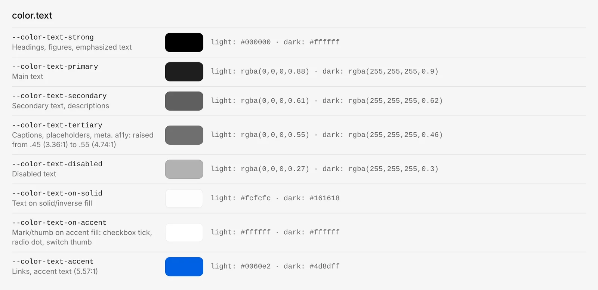
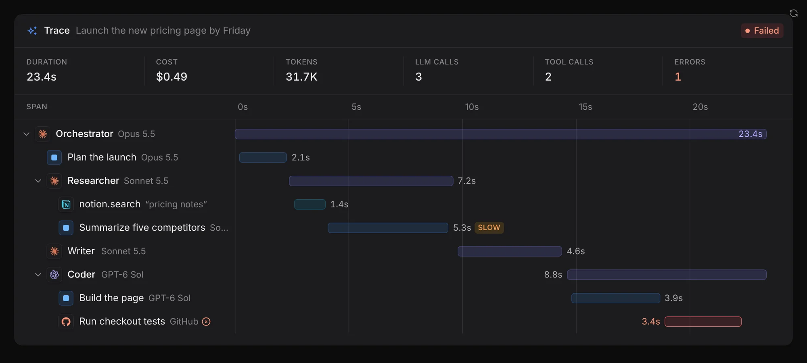
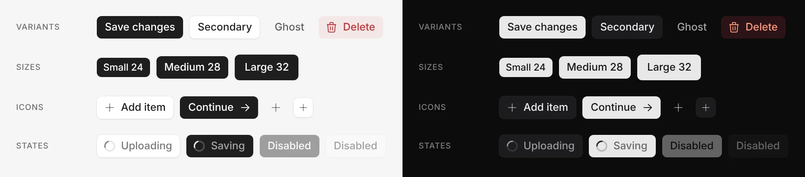
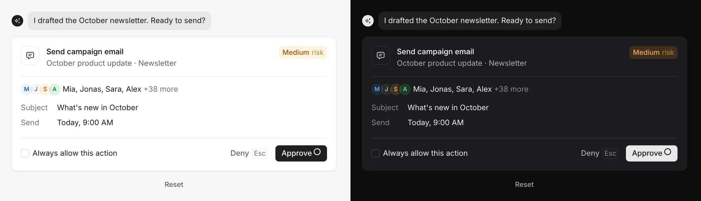
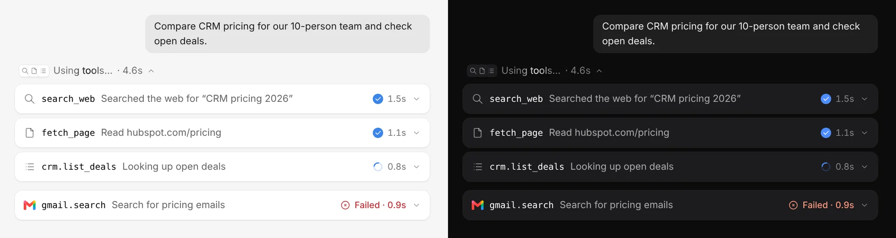

Дизайн-система с нуля сразу в коде: от токенов до Storybook
Я хотел научиться вести компоненты дизайн-системы не только в Figma, но и в Storybook и в коде. Поэтому собрал свою систему так, как её получает разработчик: токены в одном файле, компоненты на React, описание каждого и Storybook, который публикуется сам после каждого изменения.
РольАвтор системы. Решения по токенам, структуре, документации и приёмке мои. Код писался вместе с ИИ-агентом Claude Code, каждый компонент я проверял вручную.
ЗадачаПройти весь путь дизайн-системы самому: от названий токенов до компонента, который разработчик берёт из репозитория, а не перерисовывает из макета.
Что сделал125 токенов в формате W3C со светлой и тёмной темой, 75 компонентов в пяти слоях, 74 описания компонентов, генерацию историй и автопубликацию Storybook.
РезультатРаботающий Storybook ↗ с 230 историями и переключателем Light / Dark / System. Первая версия и вторая итерация опубликованы 31 октября и 1 ноября 2026.
Масштаб
Что внутри системы
125
токенов в одном файле, у цветов значения для двух тем
75
компонентов: от кнопки до панели трассировки агентов
230
историй в Storybook, у каждого компонента своя страница
74
описания компонентов: когда использовать, токены, состояния
Цифры посчитаны по репозиторию Zgarok/project-0 ↗ и по собранному Storybook. Кроме компонентов, в системе 78 иконок из Tabler Icons и 20 логотипов сервисов, у каждого логотипа записан источник.
Как устроено
Один источник правды и цепочка до публикации
Главное правило: значение живёт в одном месте. Цвет, отступ или радиус меняются в tokens.json, а дальше изменение само доходит до CSS, компонентов и опубликованного Storybook.
tokens.json 125 токенов, формат W3C Design Tokens
→
tokens.css CSS-переменные генерируются из JSON
→
Компоненты React + TypeScript на токенах
→
Описание файл на каждый компонент
→
Storybook 10 истории собирает скрипт
→
GitHub Pages публикация после каждого пуша
Путь изменения от токена до опубликованной страницы. Сборку и публикацию Storybook запускает GitHub Actions на каждый пуш в основную ветку, руками ничего не выкладывается.
Шаг 1 · Токены
Токены называют роль, а не цвет
Токены разложены по группам: цвет, типографика, отступы, радиусы, размеры, тени, фокус, иконки, прозрачность, а также отдельные палитры для графиков и подсветки кода. Названия описывают назначение: color-text-secondary, color-bg-surface, space-control-padding-md. Поэтому компонент не знает, какого цвета он будет, а знает только, какую роль играет элемент.
У каждого цветового токена сразу два значения, для светлой и тёмной темы. Тема переключается одним атрибутом на странице, а без него система следует настройке операционной системы.

Цветовые токены текста в Storybook. У каждого токена назначение и значения для двух тем. В описание записан контраст: например, третичный текст я поднял с прозрачности .45 до .55, чтобы контраст вырос с 3,36:1 до 4,74:1 и прошёл порог WCAG AA для обычного текста в 4,5:1.
Контраст записан прямо в описании 11 цветовых токенов. Цвета для графиков вынесены в отдельную группу с пометкой «только для визуализации данных, никогда в интерфейсе», а заливка, у которой контраст на белом 2,19:1, помечена как «никогда для текста и не единственный признак».
Шаг 2 · Слои
Пять слоёв, и самый большой — ИИ-компоненты
Основы (цвета, шрифты, отступы, иконки, логотипы)
2
Атомы
14
Молекулы
11
Организмы
15
ИИ-компоненты
33
Разделы Storybook по числу компонентов. ИИ-компоненты делятся на четыре группы: агенты — 15, чат — 8, мониторинг работы агентов — 6, согласования — 4. В «Основах» две страницы: токены и логотипы.
Базовые слои — то, без чего не обойдётся ни один продукт: кнопки, поля, переключатели, меню, таблица, диалоги. ИИ-слой — интерфейсы, которые нужны продуктам с агентами: агент спрашивает разрешение перед действием, показывает план из шагов, вызывает инструменты, а пользователь видит, сколько времени и токенов ушло на каждый шаг.
AgentPlan. Агент показывает план до запуска: шаги можно переставить, переименовать или добавить.

TraceWaterfall в тёмной теме. Кто из агентов что делал и сколько это заняло, с длительностью, стоимостью и числом вызовов сверху.
Шаг 3 · Документация
У каждого компонента есть описание, по которому его можно собрать заново
Описания лежат рядом с кодом, по одному файлу на компонент, всего 74. Описание отвечает на вопросы дизайнера и разработчика: когда компонент нужен, а когда лучше взять другой, из каких токенов он собран, как ведёт себя в каждом состоянии и что нужно для доступности.
Пример: Button
Когда не использовать: для перехода на другую страницу нужна ссылка, чтобы её можно было открыть в новой вкладке.
Варианты: primary, secondary, ghost, destructive. У каждого перечислены токены фона, hover и текста. В группе не больше одной primary.
Размеры: 24, 28 и 32 px, у каждого свои токены отступа и иконки.
Состояния: hover, active, focus только с клавиатуры, disabled, loading — подпись остаётся читаемой, фокус сохраняется.
Доступность: у кнопки без подписи обязателен aria-label.
Что повторяется в описаниях
Раздел «Доступность» — в 18 описаниях, «Поведение» — в 12, «Клавиатура» — в 4.
Таблица «часть компонента → токен»: видно, откуда берётся каждое значение.
«Решения и отклонения»: что в компоненте сделано иначе, чем у референса, и почему.
Список свойств компонента для разработчика.

Страница Button в Storybook, светлая и тёмная тема. Варианты, размеры, кнопки с иконками и состояния загрузки и disabled на одном экране.
Шаг 4 · Темы
Тёмная тема не рисуется отдельно
В Storybook есть переключатель Light / Dark / System. Он только меняет атрибут на странице, а значения подставляют токены. В CSS компонентов нет ни одного правила под тёмную тему, значения для неё подставляют токены. Поэтому новая тема — это правка одного файла.

ApprovalCard в двух темах. Агент спрашивает разрешение перед действием и показывает уровень риска. Deny — по Esc, Approve — по ⌘↵; если задан срок, внутри кнопки Approve идёт кольцо обратного отсчёта, и оно останавливается, пока курсор над карточкой.

ToolCall в двух темах. Вызовы инструментов агента: что вызвано, с каким запросом, сколько заняло и какой упал с ошибкой.
Шаг 5 · Автоматизация
Истории и публикация не делаются руками
Компоненты сначала собирались как превью с описанием. Дальше отдельный скрипт превращал каждое превью в страницу Storybook: историю, демо и описание, а из реальных свойств компонента — набор вариантов на странице. Так 75 компонентов получили 230 историй без ручного заполнения.
После каждого пуша в основную ветку GitHub Actions собирает Storybook и выкладывает его на GitHub Pages. Опубликованная версия всегда совпадает с кодом в репозитории.
Две итерации
31 октября. Первая версия: токены, компоненты, описания и Storybook с публикацией. Следом добавлен ещё один компонент, журнал действий агента.
1 ноября. Вторая итерация: 11 новых компонентов, в том числе KPI-график и выбор интеграций. Анимацию подогнал под тайминги референсов. Превью получили серую подложку, а кнопку повтора анимации я сделал иконкой в углу.
Итог
Что этот проект дал
1 файл
с токенами, из которого получаются CSS, обе темы и всё, что видно в Storybook.
75 / 74
компонентов и их описаний: у каждого компонента есть документ с токенами, состояниями и правилами.
0 ручных
шагов публикации: Storybook собирается и выкладывается сам после каждого пуша.
Главный вывод для работы в команде: если дизайн-система начинается с токенов и описаний, ИИ-агент быстро собирает компоненты по правилам. Моя работа смещается от отрисовки к решениям: как назвать роль, какой контраст допустим, где компонент отклоняется от референса, и к приёмке результата.
Дальше — связать цепочку «дизайн-система → Storybook → GitHub» с рабочими проектами, чтобы разработчик брал компоненты из кода, а не перерисовывал их из макета. Иконки и логотипы уже лежат в репозитории отдельно в SVG для Figma.
Что здесь моё. Структура системы и слоёв, правила именования токенов, значения для двух тем и проверка контраста, шаблон описания компонента, решения и отклонения от референсов, приёмка каждого компонента. Код компонентов, скрипт генерации историй и настройку публикации писал ИИ-агент Claude Code по моим постановкам: все коммиты в репозитории сделаны в соавторстве с ним.